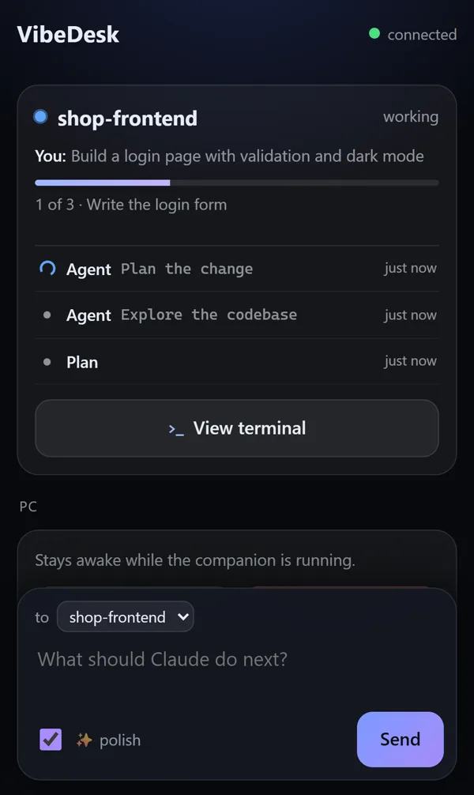
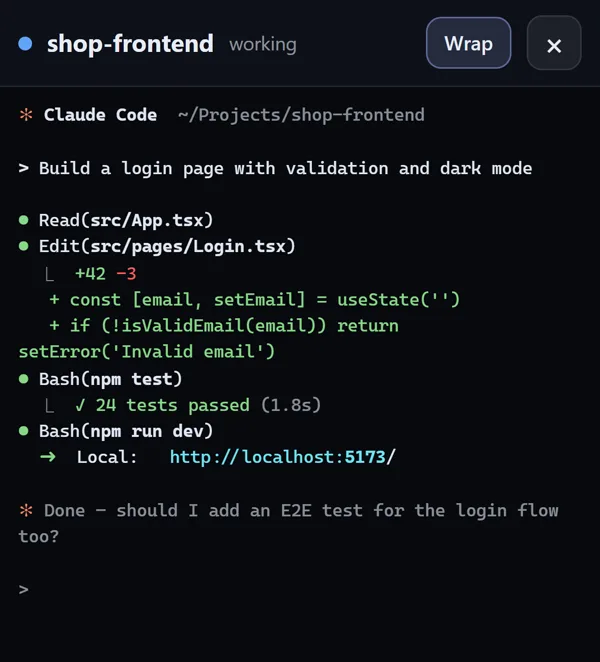
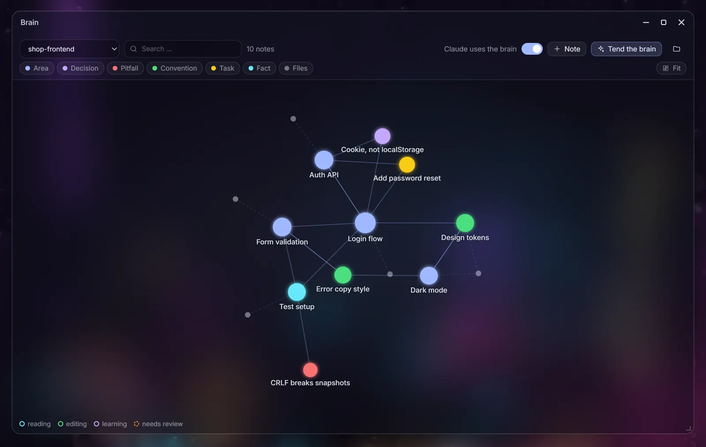
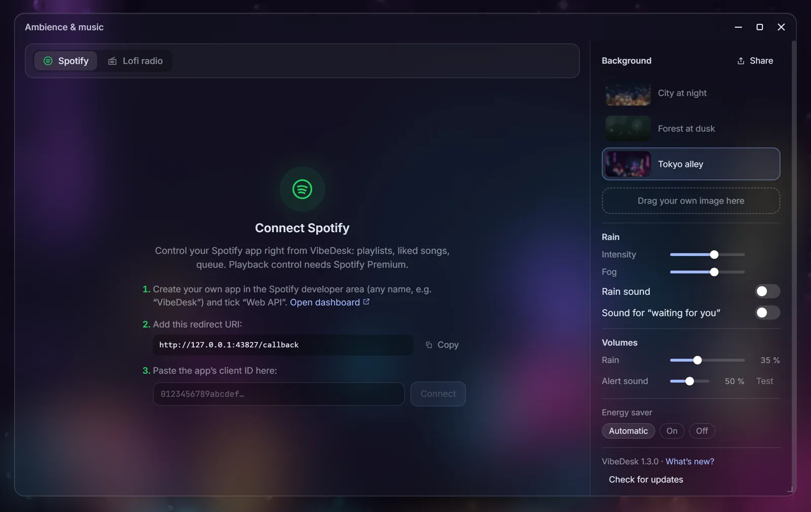
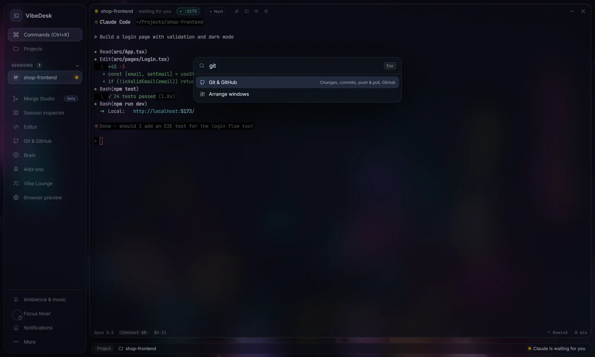

Real screenshots, no mockups
Everything happening.One calm place.
Claude Code keeps running in real terminals. VibeDesk adds the overview around them: what each session is doing and what it is waiting for.






A session waits for you: Allow, Always or Deny – without hunting for the terminal.Learn more
How it works
Set it up once.Then just build.
Install VibeDesk
Run the installer. If Node.js or Claude Code are missing, VibeDesk offers to set them up on first start.
Open your project
Pick a folder and start Claude – one session or several side by side, each in a real terminal.
Step in when it counts
VibeDesk tells you when a session needs you. Answer in one click, then let Claude keep going.
Try it
See who needs you.Answer in one click.
Every session gets a colored dot: green is working, yellow is waiting for you, blue is done. Click Allow on the card and watch what happens.
Everything about sessionsnpm test
An illustration – the colors and the card work just like in the app.
Safe by default
Your projectsstay yours.
VibeDesk is a calm layer around the real Claude Code. It doesn't replace it, and it doesn't hide what Claude does.
- Runs the real Claude CodeThe official
claudeCLI that you install and log in to yourself. - Leaves your settings aloneYour
~/.claude/settings.jsonand project settings are never changed. - Stays on your PCSettings, stats and the project memory live locally. The phone link only runs while you switch it on.
- No account, no trackingAnonymous counting only if you say yes – a random ID and the version, nothing else.
- Free and open sourceMIT licensed. Every line is on GitHub, and you can build it yourself.
- IndependentNot made by Anthropic. Claude usage runs on your own Pro/Max plan or API key.
Next release
VibeDesk 2.0 lands in
Planned
Most wanted by you
- No wishes yet – be the first.
Wishes with the most 👍 move into the next release.
Is VibeDesk made by Anthropic?
No. VibeDesk is an independent, unofficial open-source project. It runs the real Claude Code CLI that you install and log in to yourself.
What do I need?
Windows 10 or 11 (64-bit), Claude Code, and a Claude Pro/Max plan or an Anthropic API key. If Node.js or Claude Code are missing, VibeDesk offers to install them on first start. Git and the GitHub CLI can be installed with one click when you need them.
Is it really free?
Yes. VibeDesk is free and open source under the MIT license. Claude usage is billed by Anthropic through your own plan, not by VibeDesk. Costs shown in the app are estimates based on API prices.
Does it change my Claude Code settings?
No. VibeDesk does not touch your ~/.claude/settings.json or project settings. Sessions started in VibeDesk get a temporary settings file with its hooks, passed via --settings. Sessions you start elsewhere are not affected.
Windows says “Windows protected your PC”.
The installer is not code-signed, so SmartScreen may warn about it. Click More info → Run anyway. To check the file, compare its SHA256 checksum with the one in the release notes.
Make room foryour next idea.
Free for Windows 10 and 11Latest: